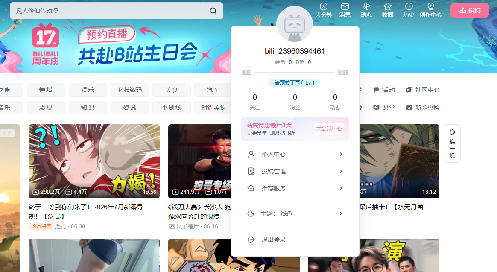

初期ページ
Bilibiliのウェブサイトにアクセスすると、これが初期画面になります。まず最初に行うべきことは、アカウントの登録とログインです。ログインすると、より高画質で視聴でき、視聴履歴も残るようになります。

登録・ログイン
画面上部中央の検索バーの右側に、青い「登录」（ログイン）ボタンがあります。

これが登録・ログイン画面です。お持ちの国・地域の携帯電話番号を選択し、認証コードを取得して登録できます。登録が成功すると、自動的にアカウントにログインされます。
動画プレイヤーの設定
動画を開くと、下部に以下のようなコントロールバーが表示されます。

青線部分（左から順に）：画質、再生速度、字幕（ある場合）、音量、再生設定、ピクチャーインピクチャー、ワイドスクリーン、ウェブ全画面、全画面モード
赤線部分：現在の同時視聴者数、弾幕（コメント）のオン/オフ、弾幕設定、弾幕入力欄（※新規登録アカウントは別途手続きが必要）
黄線部分：いいね、コイン投げ（Bilibili独自の機能で、いいねよりも価値が高い）、お気に入り、シェア
アカウントのアップグレード
新規登録したアカウントでは弾幕を送信できません。この機能を使うには、アカウントをアップグレードする必要があります。
メイン画面で、ログインアイコンがあなたのアカウントのアバターに変わっています。アバターの上にマウスを置くと新しいエリアが表示されるので、「答题转正直升lv.1」（クイズで正式会員昇格）をクリックします。


クイズ画面が表示されます。ただし、この部分は中国人にとっても難しいため、赤線部分から招待コード（邀请码）を入力することもできます。
招待コードは、アカウントレベルが lv.5 以上のユーザーが申請する必要があります。必要な場合は下記のメールアドレスまでお問い合わせください。
これらの手順を完了すると、アカウントは正式アカウントになります。その後のログインや動画視聴によってアカウントレベルが上がっていきます。
新たな質問がある場合は、お気軽にお問い合わせください。今後もこのガイドを継続的に更新していきます。